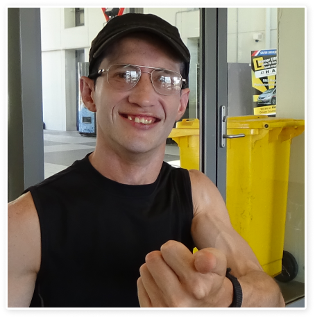

Fresh Tracks helps people with brain injuries get on the tracks outside

as well as get on the tracks inside
HOW WE HELP

Fresh Tracks provides supervised outdoor cycling using recumbent bikes and a home-based system called the
VRcycle that combines a modified recumbent exercise cycle, computer tablet and specifically designed APP. Riders
use the VRcycle to physically peddle and steer to move an Avatar through a range of challenges.
Both services provide physical and mental stimulation and through regular use work to develop new neural
connections helping in the persons rehabilitation.

Our Vision
To provide activity-based services that stimulate the brain, improve strength and build social connections in
young people who have suffered an acquired brain injury.

Why We Started
Fresh Tracks Foundation was started by the friends and family of Sam Carson, aged 26 who suffered an acquired
brain injury (ABI) in October 2009.
When Sam left Rehab his family and extended network had huge difficulties finding support to continue his recovery. It was for this reason that they came together to form the Freshtracks Foundation to assist Sam and other young Australians work to recover from an acquired brain injury.
Throughout the last 13 years we have partnered with some wonderful organisations and worked with amazing and brave individuals. Throughout this journey we have found our services which both stimulate the brain directly and indirectly through exercise of the body have produced the greatest benefits. Our programs now focus on primarily on supervised outdoor and home-based recumbent cycling.
When Sam left Rehab his family and extended network had huge difficulties finding support to continue his recovery. It was for this reason that they came together to form the Freshtracks Foundation to assist Sam and other young Australians work to recover from an acquired brain injury.
Throughout the last 13 years we have partnered with some wonderful organisations and worked with amazing and brave individuals. Throughout this journey we have found our services which both stimulate the brain directly and indirectly through exercise of the body have produced the greatest benefits. Our programs now focus on primarily on supervised outdoor and home-based recumbent cycling.
We Need Your Help

We work hard to ensure resources are not duplicated and the effectiveness of every dollar spent is maximised